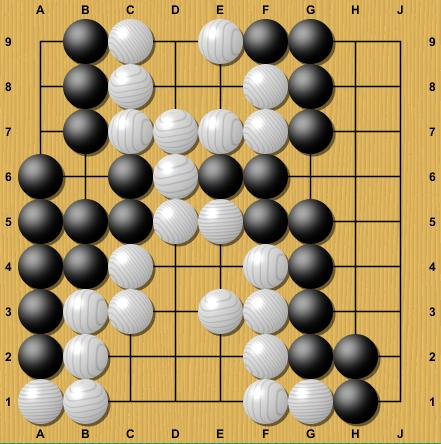
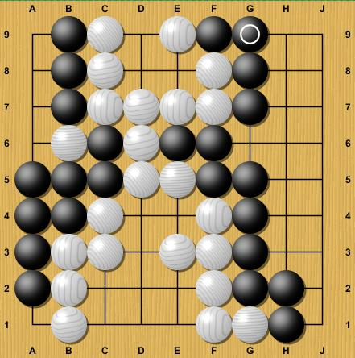

These minimal rules don't help at all to understand how to play
- all the interesting strategy and tactics, as well as all the
arcane arguments about the rules, scoring, and treatment of
particular positions emerge from the simple rules, and for the
most part are irrelevant to non-expert players. The
best way to understand how to play and how a game develops is to
start at the end.
|  |
A completely resolved gameHere is a completely finished
game. Black owns all the points that are occupied
by black stones, or completely surrounded only by black
stones. White owns all the points that are
occupied by white stones, or are completely surrounded
by white stones. Final score: Black 46
White 35 - black has won by 9 points. It may help to visualize all
the empty spaces filled with either black or white
stones.
|
||
|  |
The game actually ended here.Go players don't usually play
all the way to the completely
resolved state you see above. Just as
chess players will say "mate in 2", nod at each other,
and quit, experienced Go players know when the final
score is completely determined, and stop play at that
point. Experienced players will
know, and agree, that the white stone at B6 can't avoid
being captured, and that the empty point at A1 belongs
to white. If there is any disagreement,
about this, the players simply resume playing, until
there is no disagreement. There are several methods to
determine the score from here, which are for all
practical purposes the same It's the unusual cases
that cause all the controversy and complications you may
have heard of. There are only a few of these
that are likely to occur in ordinary play. |
||
The Seki ruleIn some situations, black and white are in contact, but
neither player can capture the other. In these
situations, all the stones and all the empty
intersections involved are not counted for either side. |
|||
The Ko ruleIn some situations, black and white can easily capture and recapture the same position endlessly. If this were allowed, the game would never end, so it's forbidden. In actual play, where black or white would like to play a forbidden move, he will instead make a threatening move somewhere else. |
|||
The Bent Four ruleMany pathological situations can be constructed which involve capturing and recapturing stones endlessly in ways that are more complicated than simple Ko.In practice, there is only one of these that is likely to occur in actual play, which is known as "bent four in the corner". Bent four is dead. There's a good explanation for this ruling and it's universally agreed. |